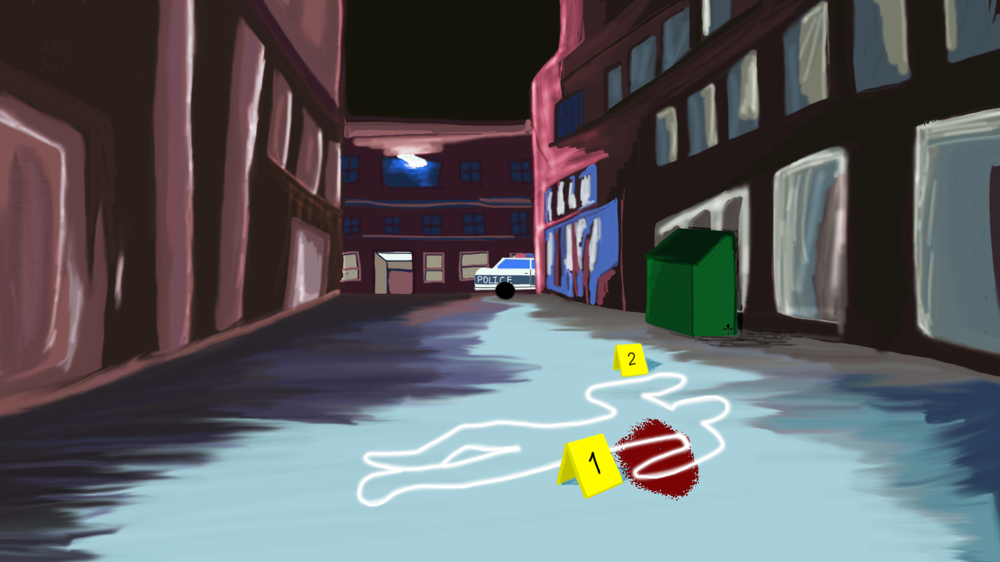
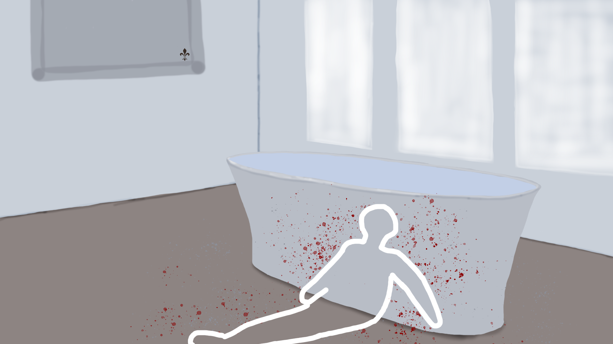
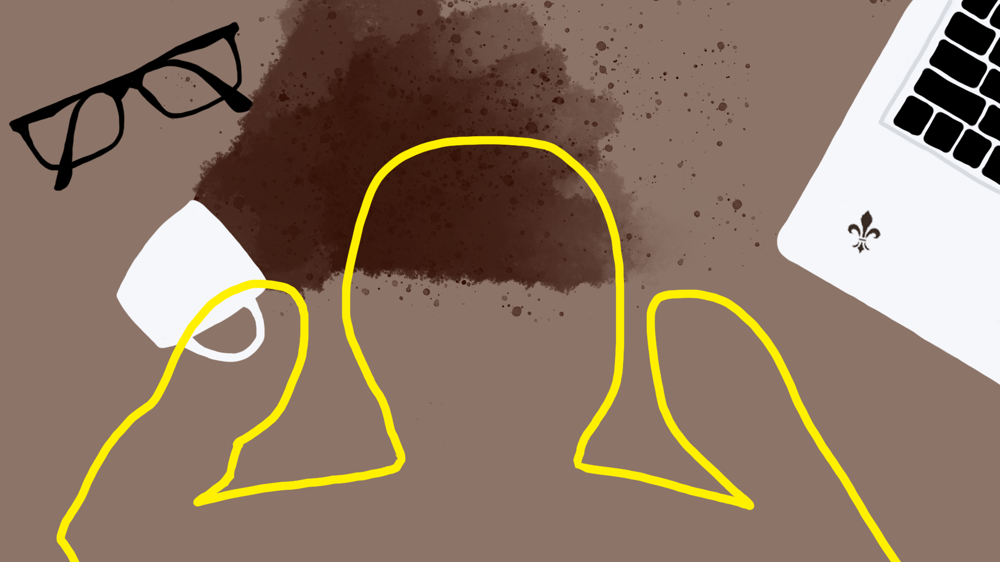
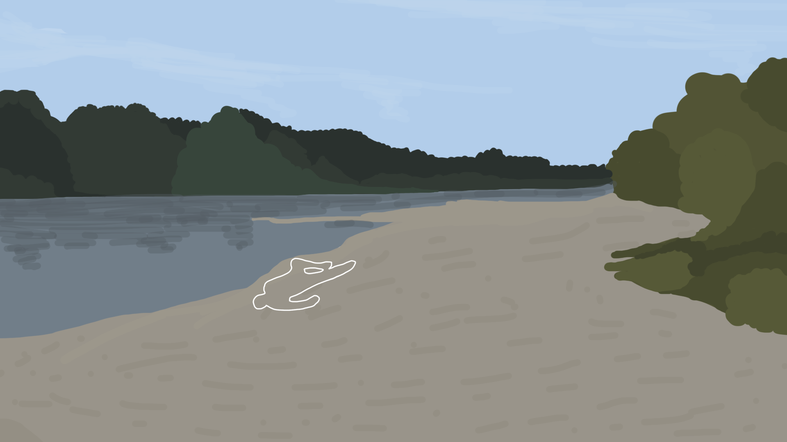
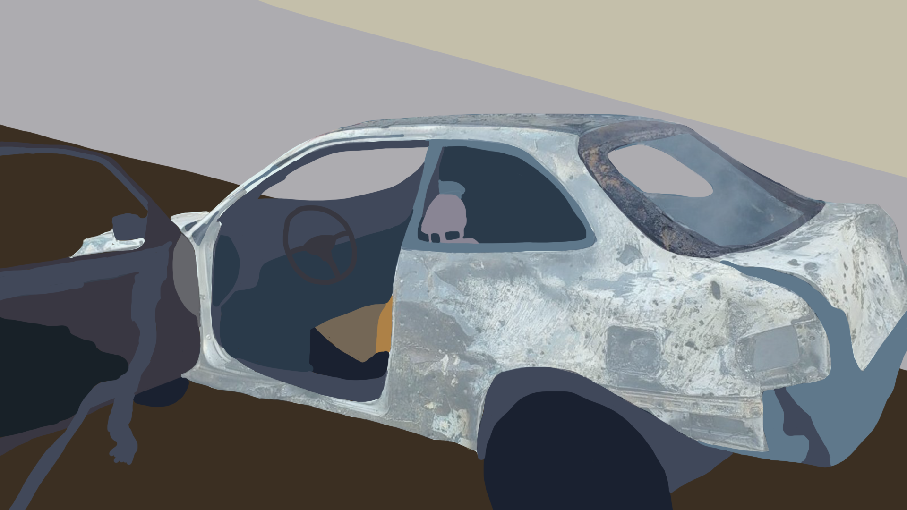

Case Files
Chapter One

- Case ID: 21CR0211
- Victim: Male, mid 40s
- Location: An alley behind restaurant
- Date&Time: Feb 11th, around 730 pm
- COD: Gunshot
-
Detailed Description:
A male victim, Jack Bobson,46, accounting, found dead at an alley behind a restaurant at 7:30 pm.
The case of death is a gunshot wound at the victim's front head by a 0.9mm gun.
After examination, the gun is the same gun as case ID 21CR0203 and case ID 21CR0212.
Chapter Two

- Case ID: 21CR0212
- Victim: Female, 24
- Location: Victim’s home, a luxury townhouse
- Date&Time: Feb 4th
- COD: Excessive blood lost
-
Detailed Description:
A female victim, Sofia Luna, 24, found dead in her home bathroom.
By the time found the body, the victim dead for a week-long,
and the case of death is excessive blood loss by an open cut on her neck by a sharp weapon.
The gun for the case ID 21CR0212 and case ID 21CR0203 was found in the victim's bedroom under her bed.
Chapter Three
- Case ID:21CR0203
- Victims: 8 victims in total
- Location: Hotel Rooftop
- Date&Time: Feb 3rd, 5pm
- COD:
7 Male Victims – Gunshot
1 Female Victim - Falling
-
Detailed Description:
On February 3rd, gunfire was reported at the Grand hotel.
Then, the witness saw a body falling off from the rooftop after 5 minutes, where the gunfire happened.
When the police arrive, they found out there were seven victims on the rooftop shoot by gun,
and one victim was falling off from rooftop, no gunshot or sign of pushing.
The gun was found in case ID 21CR0212.
Chapter Four

- Case ID: 21CR0222
- Victim: Male, 36
- Location: City Hall
- Date&Time: Feb 22nd, 3pm
- COD: Poison
-
Detailed Description:
A male victim, Willson Stargrey, 36, found dead at his office in city hall by poison in his coffee.
The poison is potassium cyanide, the source of which is unknown.
Surveillance video record an unidentified female has entered the city hall before the crime, but no recorded shows exit.
The same mark as case ID 21CR0211 and case ID 21CR0212 left on the scene.
The investigation shows that there no direct connection between the victim and the previous cases victims.
Chapter Five

- Case ID: 21CR0301
- Victim: Male, 29
- Location: Beach Nearby Yacht Club
- Date&Time: March 1st, 3am
- COD: Drowning
-
Detailed Description:
A male victim, Alexander Altman, 29, found drowning death at a beach nearby the Yacht Club.
The witness claimed that the victim left the dock at 10 am in the same morning,
and his yacht found out 20 miles in the middle of the sea.
The same mark find at victim's yacht.
Chapter Six

- Case ID: 21CR0307
- Victim: Female, 32
- Location: East Main St
- Date&Time: March 7th, 10AM
- COD: Car Bomb
-
Detailed Description:
A female victim, Victoria Milla, 32, found in a car bomb attack.
The bomb is located at the bottom of the victim's car and connected with the car starter.
The bomb is self-made that has the same mark as other cases.
Three people, two adults and one minor, injured by the side effect of the bomb.
Chapter Seven
- Case ID: 21SPXXXX
- Victim: Unknown
- Location: Unknown
- Date&Time: March 15th
- COD: Unknown
-
A warning notes from the suspect:
The final show is on March 15th.